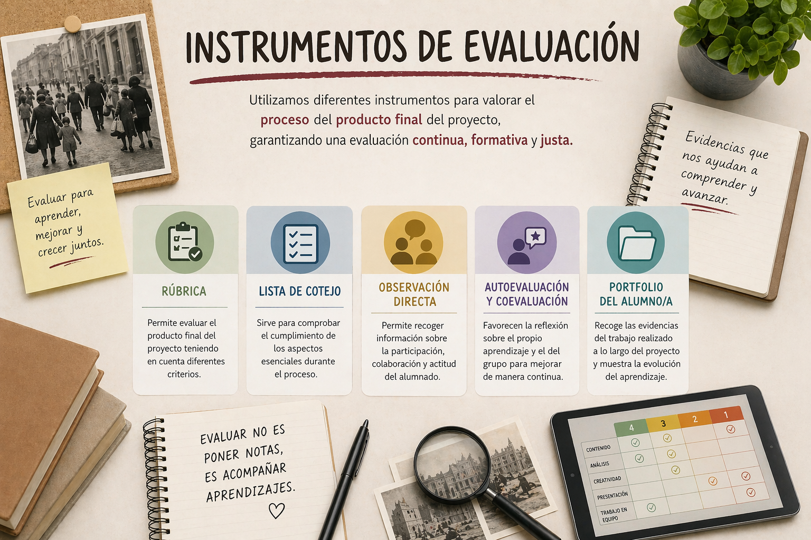

En este apartado se presentan los instrumentos de evaluación que se utilizarán a lo largo de la situación de aprendizaje, diseñados para recoger información relevante sobre el progreso del alumnado en relación con los criterios de evaluación establecidos. Estos instrumentos permiten valorar tanto el proceso como el producto final, incorporando diferentes técnicas que favorecen una evaluación continua, formativa y orientada a la mejora. Asimismo, facilitan la obtención de evidencias variadas, fomentan la reflexión del alumnado sobre su propio aprendizaje y contribuyen a una valoración más objetiva, justa y ajustada a la diversidad del aula.